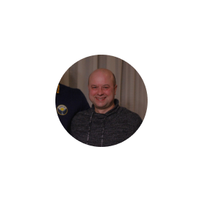
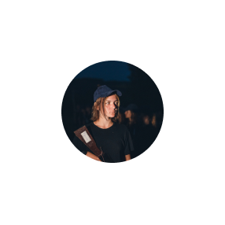
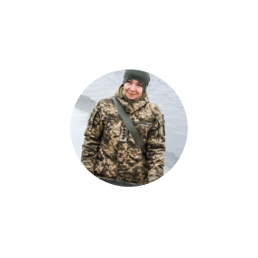
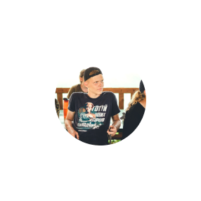
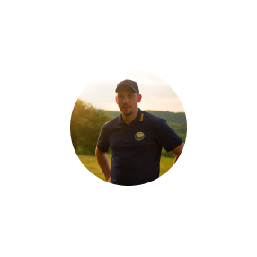
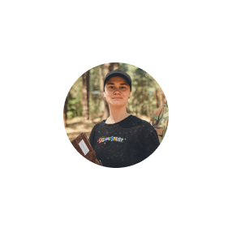
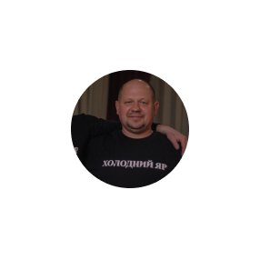

ПОКЛИК ЯРУ В ЦИФРАХ - ЦЕ:
ВІДГУКИ

МАЖОР, ройовий рою «Холодноярський вітер»
Їдучи на табір третє літо поспіль, я мав за честь стати ройовим. 24/7 відчував відповідальність. Хтось не почергував, хтось забув автомат, хтось не встиг на збірку. Все це тепер контролював я. Особливо запам'ятав момент, коли вночі повинен був зібрати свій рій, але десь не було однієї людини. Бігав по наметах, заглядав, рій стоїть на кулаках, а він просто був сонний і став не до свого рою. Це одна з багатьох цікавих історій на таборі. Мій рій ніколи не сумував. Було безліч кумедних історій. Але головним є те, що за такий короткий час ми стали Побратимами

ОЛЕГ ШЕВЧЕНКО, батько подруги Рапунцель та Азії
Зараз я з посмішкою згадую той перший раз, коли хвилювався за кожен день перебування моєї доньки на таборі. Дзвонив до бунчужного, сердився на всіх, коли не брали слухавку. Тоді я не розумів, що в дітей на цьому таборі реально немає часу на телефони. Переконався, приїхавши з дружиною на батьківський день. Зранку до вечора діти грають у різноманітні ігри, займаються фізичними вправами, відвідують гутірки з історії, домедичної допомоги, розбирають і збирають ММГ, стріляють з пневматичної гвинтівки і ще багато іншого. На третій рік до Рапунцель приєдналася Азія - моя менша донька. 2021-го року команда організації "Поклик Яру" провела свято Покрови в Холодному Яру, куди ми всією сім'єю теж потрапили. Емоції від тих подій ще й досі гріють серце. Просто уявіть: сотні людей, утворивши вогнем живу карту України, в унісон промовляють молитву українського націоналіста. Саме тоді ти розумієш — Україні бути! Майбутнє за цими юнаками та юначками

ПОДРУГА ВОЛИНЬ — член команди «Поклик Яру»
Найпомітніша зміна від перебування в команді «Поклик Яру» — починає зникати етап «а нашо, може пізніше, а воно мені треба?» у виконанні будь-чого. Натомість, з’являється стійке і холодне розуміння невідкладності роботи. Я навчилась більш якісної комунікації з різними людьми. Розв’язувати конфлікти, вирішувати важливі питання до дедлайну — фундаментальні навички у сучасному світі. Я отримала афігенне ком’юніті, людей зі спільними ідеями цінностями та поглядами. Організація «Поклик Яру» стала невід’ємною частиною мого життя і я цьому безмежно рада

ПОДРУГА СОНЦЕ — рій імені Василя Чучупаки
Гортаючи стрічку в тік тоці, я наштовхнулася на відео про «Поклик Яру». Так і прийняла рішення, яке врешті дуже вплинуло на моє життя. Численні гутірки, виховні моменти від проводу, випробування і велика кількість нових для мене перешкод. Табір наштовхнув мене на переосмислення багатьох речей та змінив систему цінностей. Я стала дивитися на світ, як відповідальна і національно-свідома людина. Мені дивно, що моя свідомість стала інакшою всього за десять таборових днів. Це заслуга молодої команди «Поклик Яру». Вони передають кожному з вихованців думку про те, що всі бар'єри існують лише в нашій голові

НАДІЯ ЗАМРИГА — мама подруги Волинь
Її перша зміна на таборі була цікавою, складною, емоційною, випробувальною. Не передати мій подив, коли на половині моєї дороги до Черкас вона подзвонила і сказала, що хоче залишитися ще на одну зміну! Друга зміна, під час якої моя Волинь стала ройовою, ще більше зміцнила її і загартувала характер. Систематизувався в її поглядах національний дух, поглибилися знання з історії країни. Вона з надзвичайним трепетом читала одразу придбану після табору книгу «Холодний Яр». Саме донька навчила мене і пояснила, як виконується Державний гімн України. Під час співу притискаємо до серця не долоню, а кулак. Зерна української ідеї, які пояснені командою «Поклик Яру», я впевнена, зростуть!

ПОДРУГА ГРАНЬ — виховник команди «Поклик Яру»
Я загорілася ідеєю власними руками будувати майбутнє в своїй країні. Цей запал переріс у мрію і мету. І ось я в команді людей, які вже стали моєю другою родиною. Табір, заходи, вишколи, збірки. Все це дає досвід, який набагато цінніший за гроші. Як на мене, люди, які готові повністю і безкорисливо віддаватися справі, будуть якісніше і відданіше її виконувати. «Поклик Яру» — організація, що впевнено крокує до своєї мети. Ми беремо відповідальність за майбутнє нашої Держави і власними руками будуємо свою долю

ДРУГ ЛІНГВІСТ — хорунжий рою імені Євгена Коновальця
На «Поклик Яру» свої традиції, філософія, принципи. Наприклад, новачкам ми вигадуємо особливі псевда, які підходять до особистих якостей учасника. Тут друзі на таборі — друзі назавжди. Ми називаємо один одного побратимами. Тут ти вдосконалюєшся і вчишся брати відповідальність за себе, свої вчинки. Урешті-решт, зміни проходять в Холодному Яру, а це незрівнянна атмосфера. Я люблю табір «Поклик Яру». Ви знаєте, де мене знайти влітку

РУСЛАНА ЧЕВІРОВА — мама друга Лінгвіста, Ємо, Шрека
За старших синів я не переживала, що їм там сподобається. Проте з молодшими були сумніви. Втім табір «зайшов» усім! І це не дивно. Це місце, де їх розуміють. Це місце, де їх виховують, дисциплінують. Разом з цим, їхні думки поважають, а до них ставляться, як до особистостей. Батькам важливо, коли старші товариші ставляться до підлітка, як до рівного. Виховники «Поклику Яру» не перестають тримати зв'язок з вихованцями табору й протягом року. Тому у дітей там є справжні друзі. А це багато чого вартує!

ДРУГ РОМАН — голова організації «Поклик Яру»
Розуміючи, що у роботі з молоддю необхідна системність, вирішив наважитися на кардинальний крок. Разом з ідейними друзями реалізував наш перший літній національно-патріотичний табір. Знаковою для мене подією стало придбання власної території для табору і створення громадської організації у 2020 році. Тоді я зрозумів, що колишні вихованці виросли і готові брати відповідальність за Державу, виховуючи молоде покоління далі

ПОДРУГА НЕЗНАЙКА— рій імені Василя Чучупаки
Я приїхала на табір, нікого не знаючи, не розуміючи що тут буде відбуватися. Дивні правила, дивні обов’язки, ну, взагалі не схоже на табір для відпочинку. Було важко і я навіть не зрозуміла, як захопилася цією атмосферою. Згадую той момент, коли ми пішли в ліс, щоб перевірити наші навички з виживання. Як же ми здивувалися, коли повідомили, що всі залишаються на ночівлю в лісі. Я й уявити раніше не могла, що колись буду ночувати в таких умовах. Вранці, коли ми вийшли з лісу, для мене не існувало більше таких дрібниць, як некомфортні умови. Команда «Поклик Яру» допомогла перебороти себе і стала моєю Родиною

СЕРГІЙ ГУСЄВ — батько подруги Катани та Гусьмін
Чесно кажучи, дізнавшись про спартанські умови в таборі, були деякі побоювання, що дівчата не витримають і будуть проситися додому. Та завдяки правильній мотивації і організації таборового процесу, вони навпаки були в захваті від вражень. Гутірки з історії та домедичної допомоги, навички виживання в лісі і ще багато іншого розширили кругозір моїх доньок. Завдяки табору дівчата стали витривалими, самостійними і вирішили продовжувати свою діяльність вже як члени організації. Із року в рік команда «Поклик Яру» доводить, що Холодний Яр — це місце, де виховують справді відповідальну молодь, якою може пишатися Україна. Відтепер «Поклик Яру» став пріоритетом в житті моїх доньок і я цим пишаюся

ДРУГ ІСТОРИК — координатор організації «Поклик Яру»
Команда з 17-ти людей, які щодня, безкоштовно будують організацію, що хоче виховувати відповідальну молодь. Понад 100 вихованців, які щороку проводять своє літо на таборі "Поклик Яру". Вони змінюються під нашим впливом і обирають альтернативний спосіб життя. Понад 200 батьків, які знають мене особисто, тиснуть руку, довіряють і питають поради стосовно виховання своїх дітей. Що буде далі? Масштаб нашої виховної системи буде виходити за межі одного табору. «Поклик Яру» пропонує модель виховання, яка працює і має десятки прикладів успіху в організації заходів, вишколів, благодійних акцій. «Поклик Яру» стане сходом сонця нашої Держави